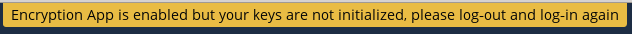
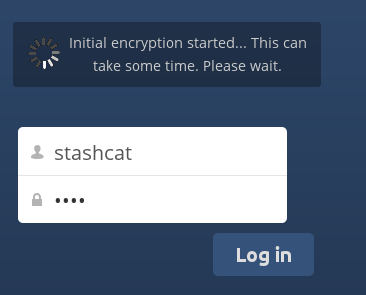

Использование шифрования на стороне сервера
В Nextcloud есть приложение шифрования на стороне сервера; если администратор его включил, все файлы с данными автоматически шифруются на сервере. Шифрование действует на весь сервер, поэтому после его включения отказаться от него и хранить файлы незашифрованными нельзя. Ничего особенного делать не нужно: пароль для входа в Nextcloud служит паролем к вашему уникальному закрытому ключу шифрования. Достаточно выйти из системы и войти снова, а дальше работать с файлами и делиться ими как обычно; пароль по-прежнему можно менять в любое время.
Основное назначение этого приложения — шифровать файлы в службах удалённого хранения, подключённых к серверу Nextcloud. Это простой и незаметный способ защитить файлы в удалённом хранилище. Делиться удалёнными файлами через Nextcloud можно как обычно, но делиться зашифрованными файлами напрямую из используемой удалённой службы нельзя: ключи шифрования хранятся на вашем сервере Nextcloud и никогда не передаются сторонним поставщикам услуг.
Если сервер Nextcloud не подключён ни к каким службам удалённого хранения, лучше использовать другую форму шифрования, например шифрование на уровне файлов или всего диска. Поскольку ключи хранятся на сервере Nextcloud, администратор Nextcloud может получить доступ к незашифрованным файлам, а при взломе сервера к ним может получить доступ и злоумышленник. (Подробнее — в статье Шифрование в Nextcloud.)
Часто задаваемые вопросы о шифровании
Как можно отключить шифрование?
Отключить шифрование можно только одним способом: запустить скрипт «decrypt all», который расшифровывает все файлы и отключает шифрование.
Можно ли отключить шифрование с помощью ключа восстановления?
Да, если каждый пользователь использует ключ восстановления файлов, скрипт «decrypt all» задействует его для расшифровки всех файлов.
Можно ли отключить шифрование без пароля пользователя?
Если у вас нет пароля пользователя или ключа восстановления файлов, расшифровать все файлы невозможно. Более того, запускать расшифровку при входе было бы опасно: скорее всего, возник бы тайм-аут.
Планируется ли перенести это на следующий вход пользователя или в фоновое задание?
Тогда пришлось бы хранить ваш пароль для входа в базе данных. Это можно счесть проблемой безопасности, поэтому ничего подобного не планируется.
Возможно ли открыть общий доступ для группы с помощью ключа восстановления?
Если вы имеете в виду, что достаточно добавить пользователей в группы, и всё заработает само, то нет. Это работает только с главным ключом.
Использование шифрования
Шифрование Nextcloud в основном настраивается один раз и забывается, но некоторые параметры всё же можно менять.
Когда администратор Nextcloud включает шифрование в первый раз, нужно выйти из системы и войти снова, чтобы создать ключи шифрования и зашифровать файлы. После включения шифрования на сервере Nextcloud на странице «Файлы» появится жёлтый баннер с предупреждением о том, что нужно выйти и войти снова:

После повторного входа шифрование занимает несколько минут (в зависимости от числа файлов), после чего вы попадаете на страницу Nextcloud по умолчанию.

Примечание
Не теряйте пароль Nextcloud: без него вы потеряете доступ к своим файлам. Администратор Nextcloud может включить необязательное восстановление; о нём рассказано в разделе «Пароль ключа восстановления» ниже.
Незашифрованные файлы
Зашифрованы только данные в ваших файлах, а не имена файлов или структуры папок. Эти файлы никогда не шифруются:
Старые файлы в корзине.
Миниатюры изображений из приложения «Галерея».
Миниатюры предварительного просмотра из приложения «Файлы».
Индекс поиска из приложения полнотекстового поиска.
Данные сторонних приложений
Изменить пароль закрытого ключа
Эта возможность доступна, только если администратор не менял пароль шифрования, а изменился лишь пароль для входа. Так бывает, если провайдер Nextcloud использует внешний механизм учёта пользователей (например, LDAP) и сменил в нём пароль для входа. В этом случае можно задать новый пароль для входа в качестве пароля шифрования, указав старый и новый пароли для входа. Приложение шифрования работает, только если пароль для входа и пароль шифрования совпадают.